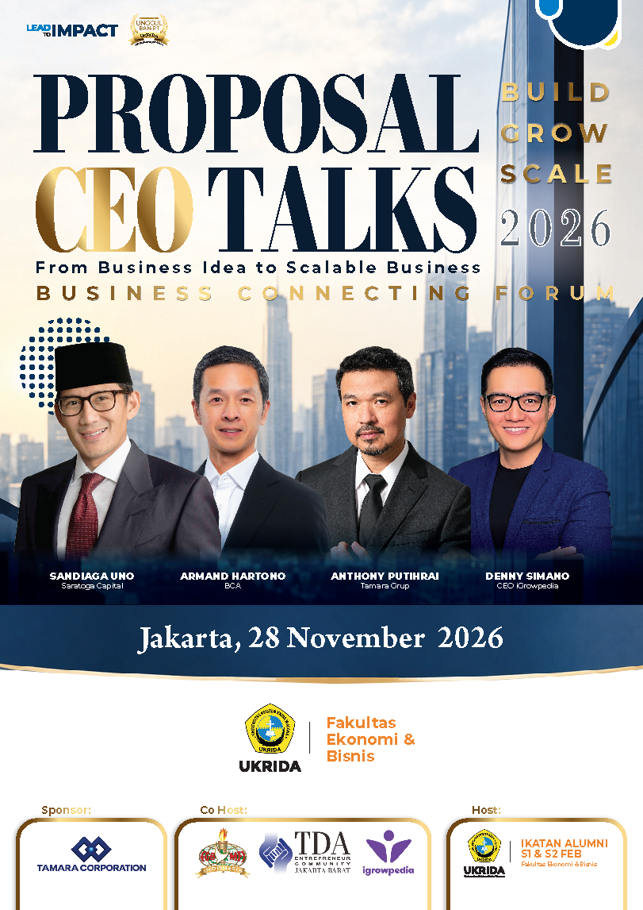

Clarity
Memahami prioritas bisnis sesuai tahap pertumbuhan, bukan sekadar mengikuti tren.

Academic Business Forum / 2026
From Business Idea to Scalable Business.
Forum satu hari untuk mengubah pengalaman para pemimpin bisnis menjadi insight, koneksi, dan langkah pertumbuhan yang relevan bagi founder, business owner, profesional, dan alumni FEB UKRIDA.
Collaboration Network
Kolaborasi lintas ekosistem menjadi fondasi Business Connect, dari panggung utama hingga pertemuan bisnis yang lebih terarah dan bernilai.

Build / Grow / Scale
CEO Talks & Business Connect 2026 mempertemukan pengetahuan kampus dengan pengalaman nyata para pemimpin bisnis. Peserta diajak melihat perjalanan usaha secara utuh, dari validasi pasar sampai organisasi yang siap berkembang.
Di sesi Business Connecting, percakapan diarahkan menuju peluang konkret seperti pemasokan, distribusi, layanan profesional, mentoring, dan kemitraan strategis.
Memahami prioritas bisnis sesuai tahap pertumbuhan, bukan sekadar mengikuti tren.
Terhubung dengan alumni, founder, sponsor, dan profesional yang relevan.
Membawa insight dan perkenalan menuju rencana tindak lanjut yang nyata.
Featured Speakers
Topik berangkat dari perjalanan membangun usaha, menjaga kepercayaan, menyiapkan modal, dan membentuk sistem pertumbuhan.
Saratoga Capital
BCA
Tamara Grup
CEO iGrowpedia
Saturday, 28 November
Pilih sesi pagi atau siang untuk melihat alur kegiatan.
Business Connecting
Profil dan kebutuhan bisnis dipetakan sebelum acara agar setiap pertemuan punya konteks dan peluang tindak lanjut.
Bidang usaha, produk, wilayah pemasaran, dan kebutuhan mitra.
Pencocokan penawaran dan kebutuhan bisnis yang relevan.
Perkenalan singkat dan diskusi dua arah yang terarah.
Kontak PIC, target waktu, dan langkah berikutnya yang jelas.
Registration Information
Proposal belum mencantumkan informasi biaya peserta. Untuk saat ini, status registrasi dan biaya ditampilkan sebagai TBA agar tidak menimbulkan informasi yang keliru.
Belum ada informasi biaya peserta dalam proposal. Status resmi saat ini adalah TBA.
Founder, business owner, CEO, penerus bisnis keluarga, alumni FEB UKRIDA, profesional, entrepreneur tahap awal, dan calon pengusaha.
Tautan akan ditambahkan pada halaman ini setelah pendaftaran resmi diumumkan oleh panitia.
CEO Talks 2026
Sabtu, 28 November 2026
Auditorium Kampus II UKRIDA